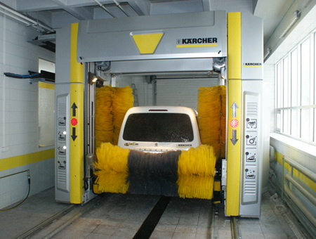

Автоматическая мойка - это высокотехнологичная мойка, позволяющая наилучшим образом сберечь лакокрасочное покрытие автомобиля, и обеспечивающая высокое качество "сушки". Последнее достигается за счёт следящего изменения направления воздушных потоков, а также за счёт применения специальных моющих средств - водоотталкивающего воска и "горячего" защитного воска. Наносимая на лакокрасочное покрытие тонкая невидимая плёнка специального полимера противодействует образованию сколов и микротрещин, а так же имеет водо- и грязеотталкивающий эффект, позволяющий сохранить автомобиль в чистом состоянии более долгое время. Горячий воск, проникая в микроскопические неровности покрытия, не только консервирует их от воздействия агрессивной окружающей среды, но и существенно улучшает внешний вид автомобиля, придавая ему глянцевый блеск.
Наномойка Антидождь Инновационный автошампунь Полировка «Жидкое стекло»